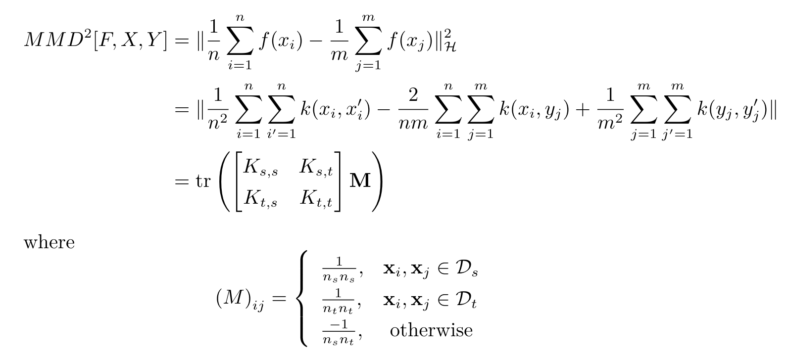

基本思想
一个随机变量的矩反应了对应的分布信息，比如一阶中心矩是均值，二阶中心矩是方差等等。如果两个分布的均值和方差都相同的话，它们应该很相似，比如同样均值和方差的高斯分布和拉普拉斯分布。但是很明显，均值和方差并不能完全代表一个分布，这时候我们就需要更高阶的矩来描述一个分布。
MMD的基本思想就是，如果两个随机变量的任意阶都相同的话，那么两个分布就是一致的。而当两个分布不相同的话，那么使得两个分布之间差距最大的那个矩应该被用来作为度量两个分布的标准。
定义
MMD常被用来度量两个分布之间的距离，是迁移学习中常用的损失函数。定义如下：
从定义中可以看到， 就相当于将映射到高阶上去，比如，那么对应的求期望就相当于分别在求一、二、三阶矩。然后将他们的上确界作为MMD的值。注意这里举的例子只是便于理解。
Kernel Emmbedding
刚才讲到，两个分布应该是由任意阶来描述的，那么 应该能够将映射到任意阶上，这里就用到了核技巧，高斯核函数对应的映射函数恰好可以映射到无穷维上。映射到无穷维上再求期望，有一个更高大上的名字，叫做kernel embedding of distributions，这个简单理解就是将一个分布映射到再生希尔伯特空间（每个核函数都对应一个RKHS）上的一个点，这样两个分布之间的距离就可以用两个点的内积进行表示。
用公式进行表达就是：
第一个等号就是利用期望展开；第二个等号利用的是RKHS的再生性，用人话来讲就是RKHS中的都可以写成一个无穷维的向量与基底向量的内积；第三个等号利用的是内积的性质；最后一个等号表示的就是kernel mean embedding。
这个等价的概念就是将 利用映射到无穷维上，然后在每一个维度上都求期望。
MMD中sup的消去
MMD中需要求一个sup，我们要将它用更直观的形式表达出来。
这里的第一个式子就是MMD的直接定义，第二个等号利用的是kernel embedding那一节中最后的结果。注意到，
这里利用的是内积的性质，，而对限制的目的也是为了避免随意取到无穷大。因此，可以得到，
MMD的简化
由于无法直接得到，可以用均值进行无偏估计。假设，并且有个样本，有个样本。
到这里我们还算是没有办法求，因为是无穷维的。但是核技巧的关键就在于不需要显式地表示映射函数来求两个向量的内积。因此我们对MMD进行平方，化简得到内积并用核函数表达。

代码实现
在实际的应用中一般使用的是多核MMD，在这里实现的时候利用的就是多个不同RBF-bandwith的高斯核。
pytorch版本 easezyc/deep-transfer-learning github
xxxxxxxxxxdef guassian_kernel(source, target, kernel_mul=2.0, kernel_num=5, fix_sigma=None): """计算Gram/核矩阵 source: sample_size_1 * feature_size 的数据 target: sample_size_2 * feature_size 的数据 kernel_mul: 这个概念不太清楚，感觉也是为了计算每个核的bandwith kernel_num: 表示的是多核的数量 fix_sigma: 表示是否使用固定的标准差 return: (sample_size_1 + sample_size_2) * (sample_size_1 + sample_size_2)的 矩阵，表达形式: [ K_ss K_st K_ts K_tt ] """ n_samples = int(source.size()[0])+int(target.size()[0]) total = torch.cat([source, target], dim=0) # 合并在一起 total0 = total.unsqueeze(0).expand(int(total.size(0)), \ int(total.size(0)), \ int(total.size(1))) total1 = total.unsqueeze(1).expand(int(total.size(0)), \ int(total.size(0)), \ int(total.size(1))) L2_distance = ((total0-total1)**2).sum(2) # 计算高斯核中的|x-y| # 计算多核中每个核的bandwidth if fix_sigma: bandwidth = fix_sigma else: bandwidth = torch.sum(L2_distance.data) / (n_samples**2-n_samples) bandwidth /= kernel_mul ** (kernel_num // 2) bandwidth_list = [bandwidth * (kernel_mul**i) for i in range(kernel_num)] # 高斯核的公式，exp(-|x-y|/bandwith) kernel_val = [torch.exp(-L2_distance / bandwidth_temp) for \ bandwidth_temp in bandwidth_list] return sum(kernel_val) # 将多个核合并在一起 def mmd(source, target, kernel_mul=2.0, kernel_num=5, fix_sigma=None): batch_size = int(source.size()[0]) kernels = guassian_kernel(source, target, kernel_mul=kernel_mul, kernel_num=kernel_num, fix_sigma=fix_sigma) XX = kernels[:batch_size, :batch_size] # Source<->Source YY = kernels[batch_size:, batch_size:] # Target<->Target XY = kernels[:batch_size, batch_size:] # Source<->Target YX = kernels[batch_size:, :batch_size] # Target<->Source loss = torch.mean(XX + YY - XY -YX) # 这里是假定X和Y的样本数量是相同的 # 当不同的时候，就需要乘上上面的M矩阵 return lossTensorFlow版本 github
xxxxxxxxxxdef maximum_mean_discrepancy(x, y, kernel=utils.gaussian_kernel_matrix): r"""Computes the Maximum Mean Discrepancy (MMD) of two samples: x and y. Maximum Mean Discrepancy (MMD) is a distance-measure between the samples of the distributions of x and y. Here we use the kernel two sample estimate using the empirical mean of the two distributions. MMD^2(P, Q) = || \E{\phi(x)} - \E{\phi(y)} ||^2 = \E{ K(x, x) } + \E{ K(y, y) } - 2 \E{ K(x, y) }, where K = <\phi(x), \phi(y)>, is the desired kernel function, in this case a radial basis kernel. Args: x: a tensor of shape [num_samples, num_features] y: a tensor of shape [num_samples, num_features] kernel: a function which computes the kernel in MMD. Defaults to the GaussianKernelMatrix. Returns: a scalar denoting the squared maximum mean discrepancy loss. """ with tf.name_scope('MaximumMeanDiscrepancy'): # \E{ K(x, x) } + \E{ K(y, y) } - 2 \E{ K(x, y) } cost = tf.reduce_mean(kernel(x, x)) cost += tf.reduce_mean(kernel(y, y)) cost -= 2 * tf.reduce_mean(kernel(x, y)) # We do not allow the loss to become negative. cost = tf.where(cost > 0, cost, 0, name='value') return costdef mmd_loss(source_samples, target_samples, weight, scope=None): """Adds a similarity loss term, the MMD between two representations. This Maximum Mean Discrepancy (MMD) loss is calculated with a number of different Gaussian kernels. Args: source_samples: a tensor of shape [num_samples, num_features]. target_samples: a tensor of shape [num_samples, num_features]. weight: the weight of the MMD loss. scope: optional name scope for summary tags. Returns: a scalar tensor representing the MMD loss value. """ sigmas = [ 1e-6, 1e-5, 1e-4, 1e-3, 1e-2, 1e-1, 1, 5, 10, 15, 20, 25, 30, 35, 100, 1e3, 1e4, 1e5, 1e6 ] gaussian_kernel = partial( utils.gaussian_kernel_matrix, sigmas=tf.constant(sigmas)) loss_value = maximum_mean_discrepancy( source_samples, target_samples, kernel=gaussian_kernel) # ... return loss_value[1] Kernel embedding of distributions https://en.wikipedia.org/wiki/Kernel_embedding_of_distributions
[2] Statistical distance https://en.wikipedia.org/wiki/Statistical_distance
[3] A collection of implementations of deep domain adaptation algorithms https://github.com/easezyc/deep-transfer-learning
[4] MMD ：maximum mean discrepancy https://blog.csdn.net/a1154761720/article/details/51516273
[5] Kernel Distribution Embedding - 李新春的文章 - 知乎 https://zhuanlan.zhihu.com/p/114264831
[6] https://www.cc.gatech.edu/~lsong/papers/SmoGreSonSch07.pdf
[7] 随机变量的矩和高阶矩有什么实在的含义？ - 姚岑卓的回答 - 知乎 https://www.zhihu.com/question/25344430/answer/64509141
[8] MMD计算的核技巧公式推导 - 王晋东不在家的文章 - 知乎 https://zhuanlan.zhihu.com/p/63026435